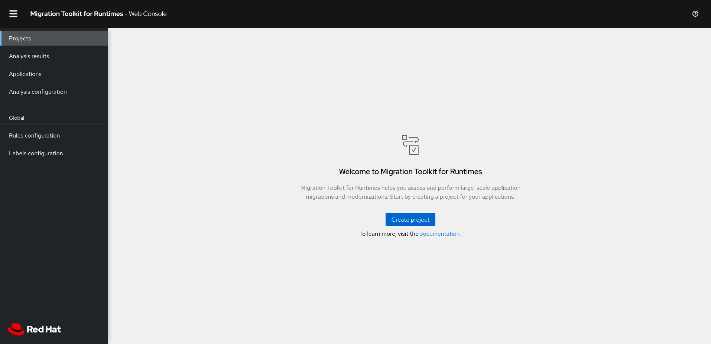
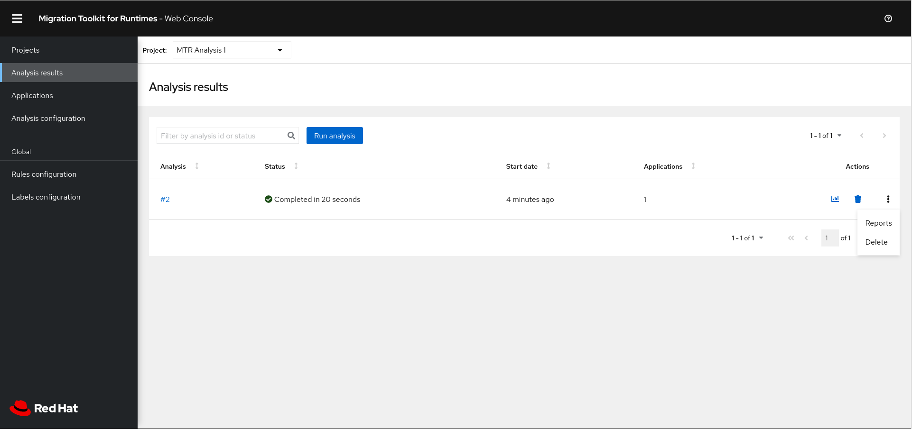
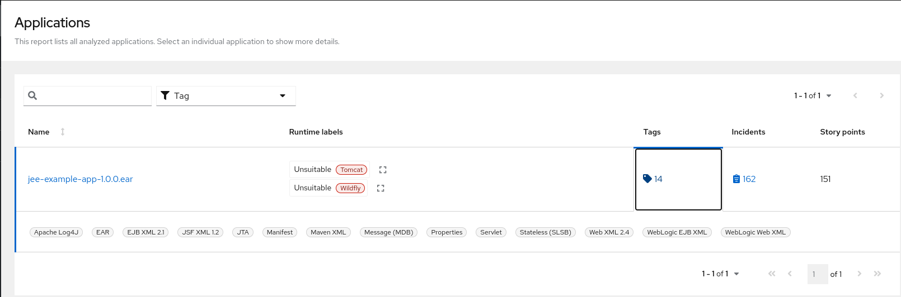

Web Console Guide
Use the Migration Toolkit for Runtimes web console to group your applications into projects for analysis.
Abstract
Making open source more inclusive
Red Hat is committed to replacing problematic language in our code, documentation, and web properties. We are beginning with these four terms: master, slave, blacklist, and whitelist. Because of the enormity of this endeavor, these changes will be implemented gradually over several upcoming releases. For more details, see our CTO Chris Wright’s message.
Chapter 1. Introduction
All customers using this product should start their transition to Migration Toolkit for Applications.
Migration Toolkit for Applications is fully backwards compatible with all features and rulesets available in Migration Toolkit for Runtimes and will be maintained in the long term.
1.1. About the Web Console
This guide is for engineers, consultants, and others who want to use the Migration Toolkit for Runtimes (MTR) to migrate or modernize Java applications or other components. It describes how to install and use the web console to manage migration or modernization projects and analyze applications.
1.2. About the Migration Toolkit for Runtimes
What is the Migration Toolkit for Runtimes?
The Migration Toolkit for Runtimes (MTR) is an extensible and customizable rule-based tool that simplifies the migration and modernization of Java applications.
MTR examines application artifacts, including project source directories and application archives, and then produces an HTML report highlighting areas needing changes. MTR supports many migration paths, including the following examples:
- Upgrading to the latest release of Red Hat JBoss Enterprise Application Platform
- Migrating from Oracle WebLogic or IBM WebSphere Application Server to Red Hat JBoss Enterprise Application Platform
- Containerizing applications and making them cloud-ready
- Migrating from Java Spring Boot to Quarkus
- Updating from Oracle JDK to OpenJDK
- Upgrading from OpenJDK 8 to OpenJDK 11
- Upgrading from OpenJDK 11 to OpenJDK 17
- Upgrading from OpenJDK 17 to OpenJDK 21
- Migrating EAP Java applications to Azure
- Migrating Spring Boot Java applications to Azure
For more information about use cases and migration paths, see the MTR for developers web page.
How does the Migration Toolkit for Runtimes simplify migration?
The Migration Toolkit for Runtimes looks for common resources and known trouble spots when migrating applications. It provides a high-level view of the technologies used by the application.
MTR generates a detailed report evaluating a migration or modernization path. This report can help you to estimate the effort required for large-scale projects and to reduce the work involved.
How do I learn more?
See the Introduction to the Migration Toolkit for Runtimes to learn more about the features, supported configurations, system requirements, and available tools in the Migration Toolkit for Runtimes.
1.3. The MTR web console
By using the web console for the Migration Toolkit for Runtimes, a team of users can assess and prioritize migration and modernization efforts for a large number of applications. You can use the web console to group applications into projects for analysis and provide numerous reports that highlight the results.
Chapter 2. Installing the web console
You can install the web console on Linux, Windows, macOS, or Red Hat OpenShift Container Platform.
2.1. Installing the web console on Linux, Windows, or macOS
You can install the web console on Linux, Windows, or macOS operating systems and access the web console in a browser.
The web console has been tested with Chrome and Firefox.
Prerequisites
The following are the prerequisites for the Migration Toolkit for Runtimes (MTR) installation:
Java Development Kit (JDK) is installed. MTR supports the following JDKs:
- OpenJDK 11
- OpenJDK 17
- Oracle JDK 11
- Oracle JDK 17
- Eclipse Temurin™ JDK 11
- Eclipse Temurin™ JDK 17
- 8 GB RAM
-
macOS installation: the value of
maxprocmust be2048or greater.
Procedure
-
Navigate to the MTR Download page and download the web console
Local install & OpenShiftfile. Extract the
.zipfile to a directory of your choice.When you encounter
<MTR_HOME>in this guide, replace it with the actual path to your MTR installation.- By default, no authentication is required. If you wish to enable authentication, do this before starting the web console.
Start the web console:
Linux or macOS operating system:
$ <MTR_HOME>/run_windup.sh
Windows operating system:
C:\<MTR_HOME>\run_windup.bat
Open a browser and navigate to
http://localhost:8080/windup-ui.If authentication is not configured, the Projects screen is displayed in your browser.
Figure 2.1. MTR Projects screen

2.2. Installing the web console on OpenShift Container Platform 4.11 and later
You can install the web console on OpenShift Container Platform 4.11 and later versions with the Migration Toolkit for Runtimes Operator.
Prerequisites
- 6 vCPUs, 8 GB RAM, and 40 GB persistent storage.
One or more projects in which you can install the web console.
ImportantDo not install the web console in a default project.
-
cluster-adminprivileges to install the Migration Toolkit for Runtimes Operator. -
project-admin-userprivileges to install the web console application in a project.
Configuring Red Hat Single Sign-on (SSO)
You must decide at installation time whether the web console requires authentication. If it does, you must first install and configure Red Hat SSO and input some RH SSO settings when instantiating the MTR Operator.
Authentication can not be added or removed after installation.
- Open the Red Hat SSO administration console.
- Add a realm named windup.
- In the realm, create a client named windup-web.
Check that Access Type is set to
public. Set Valid Redirect URIs and Web Origins to*. Click *Save*.Note that after the MTR operator has been instantiated, the Valid Redirect URIs and Web Origins fields have to be set to the secure-mtr-web-console route.
- Create a role named user.
- Create a user with any name.
- Set the credentials of the user, disable Temporary, and assign the role "user" to the user.
Installing the MTR Operator
-
Log in to the OpenShift web console as a user with
cluster-adminprivileges. - Click Operators → OperatorHub.
- Use the Search by keyword field to locate the Migration Toolkit for Runtimes Operator.
- Click Install.
- Select a project from the Installed Namespace list and click Install.
- Click Operators → Installed Operators to verify that the Operator is installed.
Installing the web console application
-
Log in to the OpenShift web console as a user with
project-admin-userprivileges. - Switch to the Migration perspective and click +Add.
- In the Add view, click Operator Backed.
- Click the Migration Toolkit for Runtimes Operator.
- Click Create.
- Review the application settings. If the web console requires authentication, input the RH SSO settings and click Create.
-
In the Topology view, click the
mtr-web-consoleapplication and then click the Resources tab. - If authentication is required, set the RH SSO Valid Redirect URIs and Web Origins fields to the secure-mtr-web-console route.
-
Click the
secure-mtr-web-consoleroute to open the web console in a new browser window.
2.2.1. Troubleshooting a web console installation on OpenShift
This section describes how to troubleshoot a web console installation on OpenShift Container Platform.
2.2.1.1. Downloading logs using the OpenShift console
You can download pod logs using the OpenShift console.
Procedure
- Open the OpenShift console and navigate to Applications → Pods.
-
Click the
mtr-web-consolepod. - Click Logs.
- Click Download to download and save a log.
2.2.1.2. Downloading logs using the CLI
You can download pod logs using the CLI.
Procedure
Obtain the pod names:
$ oc get pods -n <project-name>
The output resembles the following:
NAME READY STATUS RESTARTS AGE eap-builder-1-build 0/1 Completed 0 1d mtr-postgresql-1-hfbdn 1/1 Running 0 1d mtr-sso-1-build 0/1 Completed 0 1d mtr-web-console-1-build 0/1 Completed 0 1d mtr-web-console-1-vt7s5 1/1 Running 1 1d sso-1-wjl2n 1/1 Running 1 1d
Use
oc logsto examine the pod log:$ oc logs <pod>
NoteYou can redirect the output to obtain a copy of the current log:
$ oc logs <pod> > ./<pod>.log
2.2.1.3. No route to host error
The No route to host error in the mtr-web-console-executor log indicates that the mtr-web-console-executor pod cannot connect to the mtr-web-console pod:
13:44:03,501 SEVERE [org.jboss.windup.web.messaging.executor.ExecutorBootstrap] (main) Could not start messaging listener due to: Failed to connect to any server. Servers tried: [http-remoting://192.0.2.4:8080 (java.net.NoRouteToHostException: No route to host)]: javax.naming.CommunicationException: Failed to connect to any server. Servers tried: [http-remoting://192.0.2.4:8080 (java.net.NoRouteToHostException: No route to host)]
This error occurs because the mtr-web-console-executor pod starts running before the mtr-web-console pod.
Check the mtr-web-console-executor log after the mtr-web-console pod has been running for a few minutes.
2.2.1.4. Resolving insufficient resources
The following conditions indicate insufficient resources:
The
mtr-web-consolepod is not running and the following error is displayed on the Events tab of the Pod Details screen in the OpenShift console:0/9 nodes are available: 4 Insufficient cpu, 4 MatchNodeSelector, 9 Insufficient memory.
The
mtr-web-console-deploy,mtr-web-console-executor-deploy, andmtr-web-console-postgresql-deploypods time out and the following error is displayed in the logs:error: update acceptor rejected mtr-web-console-executor-1: Pods for rc 'mtr/mtr-web-console-executor-1' took longer than 600 seconds to become available
Procedure
- Install and run the cluster capacity tool to determine how many pods you can schedule.
Change the load on the cluster resources by performing one of the following actions:
- Increase the limit ranges or the resource quotas of your project.
- Reduce the requested resources of your project. The web console requires a minimum of 4 vCPUs and 8 GB RAM.
- Run fewer jobs.
- Redeploy the web console.
2.2.1.5. Reporting issues
MTR uses Jira as its issue tracking system. If you encounter an issue executing MTR, submit a Jira issue.
Chapter 3. Using the web console to analyze applications
You can create a project in the web console to analyze your applications.
Each project groups the applications for a specific analysis, which you can configure with custom rules and labels.
The analysis process generates reports that describe the readiness of your applications for migration or modernization.
3.1. Creating a project
You can create a project in the web console with the Create project wizard.
Procedure
- In the web console, click Projects.
- Click Create project.
- Enter a unique name for the project, an optional description, and click Next.
To upload applications, click the Upload tab, click Browse, select the application files you want to upload, and click Close.
Uploading applications stores them directly on the MTR server.
To register a server path, click the Server path tab and enter the Server-side path of the application in the field.
Registering the server path of an application ensures that MTR always uses the latest version.
- Click Next.
Click one or more transformation targets.

- Click Next.
- Select packages and click > to include them in the analysis.
- Click Next.
If you want to add a custom rule, click Add rule.
See the Rule Development Guide for more information.
To upload a ruleset file, click the Upload tab, click Browse, select one or more files, and click Close.
A ruleset file must have a
.windup.xmlextension. The uploaded file is stored on the MTR server.To register the server path of a ruleset file, click the Server path tab, enter the Rules path, and click Save.
Registering the server path ensures that the MTR server always uses the latest version of the ruleset files.
- Click Next.
If you want to add a custom label, click Add label.
To upload a labelset file, click the Upload tab, click Browse, select one or more files, and click Close.
A labelset file must have a
.windup.label.xmlextension. The uploaded file is stored on the MTR server.To register a server path, click the Server path tab, enter the Labels path of the label files in the field, and click Save.
Registering the server path ensures that the MTR server always uses the latest version of the labelset files.
- Click Next.
Review the following Advanced options and make any necessary changes:
- Target
- Source
- Exclude tags: Rules with these tags are not processed.
-
Additional classpath: Enter a space-delimited list of additional
.jarfiles or directories so that they are available for decompilation or other analysis. - Application name
- Mavenize group ID
- Ignore path: Enter a path for files to exclude from analysis.
- Export CSV: Exports the report data as a CSV file.
-
Export Summary: Generates an
analysisSummary.jsonexport file in the output directory. The file contains analysis summary information for each application analyzed, including the number of incidents and story points by category, and all of the technology tags associated with the analyzed applications. -
Export reports zip: Creates a
reports.zipfile in the output folder. The file contains the analysis output, typically, the reports. If requested, it can also contain the CSV export files. - Disable Tattletale: Disables generation of a Tattletale report for each application.
Class Not Found analysis: Enables analysis of Java files that are not available on the class path.
NoteThis option should not be used if some classes are unavailable for analysis.
- Compatible Files report: Generating a Compatible Files report might take a long time for large applications.
- Exploded app: The input directory contains the unpackaged source files of an application.
- Keep work dirs: Retains temporary files, for example, the graph database or extracted archive files, for debugging purposes.
- Skip reports: HTML reports are not generated. Must be enabled if you enabled Export CSV.
Allow network access: Validates any XML files within the analyzed applications against their schema.
NoteThis option might reduce performance.
- Mavenize: Creates a Maven project directory structure based on the structure and content of the application.
- Source mode: Indicates that the application files are raw source files, not compiled binaries. The sourceMode argument has been deprecated. There is no longer the need to specify it. MTR can intuitively process any inputs that are presented to it. In addition, project source folders can be analyzed with binary inputs within the same analysis execution.
Analyze known libraries: Analyze known software artifacts embedded within your application. By default, MTR only analyzes application code.
NoteThis option might result in a longer execution time and a large number of migration issues being reported.
Transaction analysis: [Tech Preview] Generates a Transactions report that displays the call stack, which executes operations on relational database tables. The Enable Transaction Analysis feature supports Spring Data JPA and the traditional
preparedStatement()method for SQL statement execution. It does not support ORM frameworks, such as Hibernate.NoteTransaction analysis is a Technology Preview feature only. Technology Preview features are not supported with Red Hat production service level agreements (SLAs) and might not be functionally complete. Red Hat does not recommend using them in production. These features provide early access to upcoming product features, enabling customers to test functionality and provide feedback during the development process.
- Skip source code reports: Adding this option skips generating a Source code report when generating the application analysis report. Use this advanced option when concerned about source code information appearing in the application analysis.
- Click Next.
Review your project and click Save or Save and run.
The project is displayed in the Projects screen.
3.2. Running a saved analysis
You can run a saved analysis.
Procedure
- In the web console, click Analysis results.
- Select a project.
- Click Run analysis.
A progress bar displays the progress of your analysis.
3.3. Viewing analysis results
The results of all analyses are grouped and listed by project on the Analysis results screen.
Procedure
- In the web console, click Analysis results.
Select a project from the list.
The Analysis Reports can be accessed via the Reports bar chart icon or by the Reports action on the right-hand side of the screen.
Click on the number of the analysis you want to review to see details of the analysis configuration settings and the analysis execution statistics.
The results are displayed in the Results screen, which contains two tabs: Details and Logs.
The Details tab displays important details of the analysis, such as status, start date, duration, and configuration settings.
Figure 3.1. Analysis details screen
The Logs tab displays the logs generated during the analysis.
Figure 3.2. Analysis logs screen
3.4. Reviewing reports
The MTR web console provides a set of detailed reports that can help you decide if you need to make any changes to your applications. You access these reports from the Analysis results screen.
The reports are described in detail in Reviewing the reports in the CLI Guide.
Procedure
- In the web console, click Analysis results.
Click the Reports icon
 beside the analysis you want to investigate.
beside the analysis you want to investigate.
The All applications screen of the reports is displayed.

3.5. Updating an analysis configuration
You can update an analysis configuration, for example, with a different transformation target, advanced option, or a custom rule. Then you can run the updated analysis in your project.
Procedure
In the web console, click Analysis configuration.

- Select a Project.
- Click the appropriate tabs and make your changes.
Click Save or Save and run.
The project is displayed in the Projects screen.
3.6. Adding global custom rules
MTR includes a preconfigured set of global rules, which apply to all projects.
You can define your own custom global rules.
For information on writing custom MTR rules, see the MTR Rule Development Guide.
Procedure
- In the web console, click Rules configuration.
- Click Add rules.
To upload a ruleset file, click the Upload tab, click Browse, select one or more files, and click Close.
A ruleset file must have a
.windup.xmlextension. The uploaded file is stored on the MTR server.To register the server path of a ruleset file, click the Server path tab, enter the Rules path, and click Save.
Registering the server path ensures that the MTR server always uses the latest version of the ruleset files.
The Custom rules list displays the rules.
3.7. Adding global custom labels
MTR includes a preconfigured set of global labels, which apply to all projects.
You can define your own custom global labels.
Procedure
- In the web console, click Labels configuration.
- Click Add label.
To upload a labelset file, click the Upload tab, click Browse, select one or more files, and click Close.
A labelset file must have a
.windup.label.xmlextension. The uploaded file is stored on the MTR server.To register the server path of a labelset file, click the Server path tab, enter the Labels path, and click Save.
Registering the server path ensures that the MTR server always uses the latest version of the labelset files.
The Custom labels list displays the labels.
Chapter 4. Configuring authentication for the web console on Linux, Windows, or macOS
You can configure the web console to require authentication for access. To enable authentication, you have to install Red Hat Single Sign-On (SSO).
Enabling authentication
Procedure
Adjust the port number that the Red Hat SSO server opens to avoid conflicts with the port that the web console uses by entering the following:
For Linux and macOS:
$ ./standalone.sh -Djboss.socket.binding.port-offset=<offset_value>
For Windows:
> ...\bin\standalone.bat -Djboss.socket.binding.port-offset=<offset_value>
Open the Red Hat SSO administration console from
http://localhost:8180:-
Username:
admin -
Password:
admin
-
Username:
- Add a realm named mtr.
- In the realm, create a client named mtr-web.
-
Check that Access Type is set to
public. -
Set Valid Redirect URIs to
http://localhost:8080/windup-ui/*. -
Set Web Origins to
*and click Save. - Create a role named user.
- Create a user with any name.
- Set the credentials of the user, disable Temporary, and assign the role "user" to the user.
Switch the web console to Authentication required mode by doing the following:
Export the following ENV variables:
For Linux and macOS:
export SSO_AUTH_SERVER_URL=http://localhost:8180/auth export SSO_REALM=windup export SSO_SSL_REQUIRED=EXTERNAL export SSO_CLIENT_ID=windup-web
For Windows:
set SSO_AUTH_SERVER_URL=http://localhost:8180/auth set SSO_REALM=windup set SSO_SSL_REQUIRED=EXTERNAL set SSO_CLIENT_ID=windup-web
NoteEnvironment variables that are set by the
setcommand in CMD are local, available to the current CMD session only. Use the Windows Control Panel to permanently set the environment variables.
Run the following script:
For Linux and macOS:
$ <MTR_HOME>/switch_to_authentication_required.sh
For Windows:
C:\<MTR_HOME>\switch_to_authentication_required.bat
Start the web console by entering the following:
For Linux and macOS:
$ <MTR_HOME>/run_windup.sh
For Windows:
C:\<MTR_HOME>\run_windup.bat
-
Open the browser at
http://localhost:8080/windup-ui.
Disabling authentication
Procedure
Run the following script:
For Linux and macOS:
$ <MTR_HOME>/switch_to_automatic_authentication.sh
For Windows:
C:\<MTR_HOME>\switch_to_automatic_authentication.bat
Revised on 2024-09-05 14:18:32 UTC